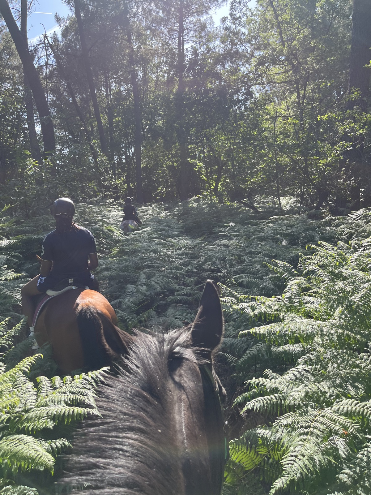
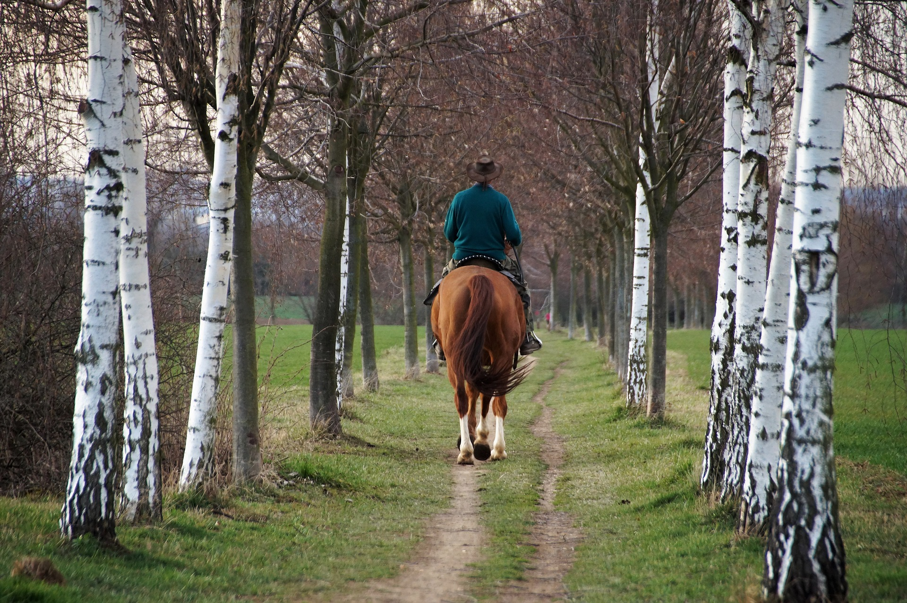
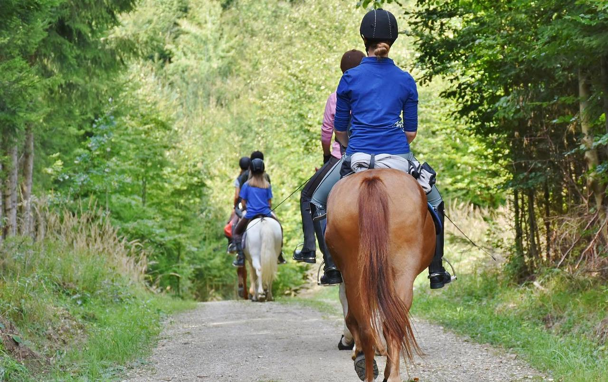
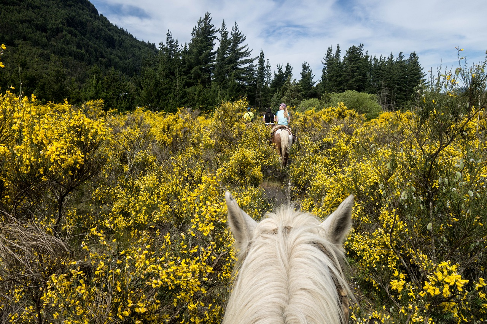
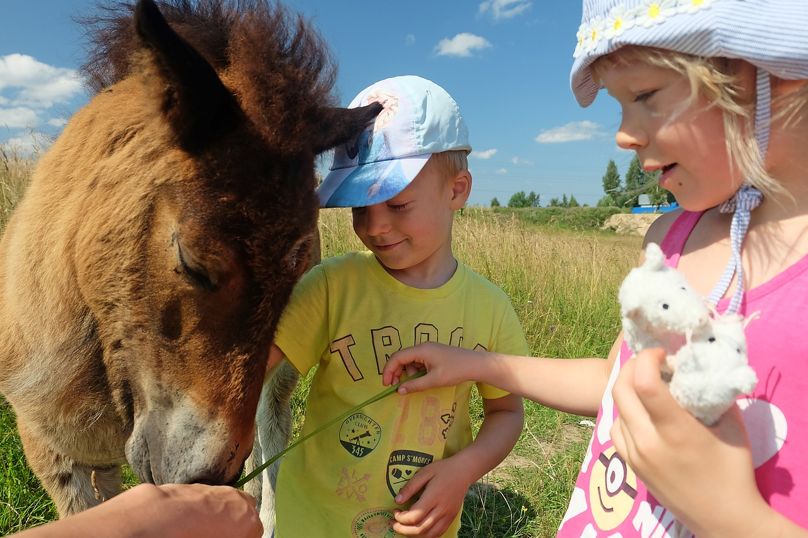

Une heure à cheval à travers la forêt du Bergeracois. Sur des chemins étroits et tranquilles, au rythme du pas et du trot. Pour tous les âges et tous les niveaux.

La balade typique aux Écuries dure une heure, à travers la forêt du Bergeracois. Sur des chemins étroits où l'on avance en file indienne, au rythme du pas et du trot. Pour des sorties plus longues, c'est possible sur demande, en fonction du groupe et de la saison.
Réserver une balade
Nos chevaux sont sélectionnés pour leur caractère calme et leur expérience de l'extérieur. Ils connaissent les bruits de la forêt, les passages serrés et les rencontres. Adaptés à tous les âges et à tous les niveaux, du tout débutant au cavalier confirmé. Les chemins sont étroits par nature : on avance en file indienne, sans place pour les écarts. Une sécurité supplémentaire, simplement liée au tracé.
Tout ce qu'il y a à savoir pour profiter de la balade.




Une balade s'organise rapidement. Appelez-nous pour réserver ou pour adapter le format à votre groupe.
Pour une balade à cheval, on vient de toute la région de Bergerac : Prigonrieux, Creysse et La Force tout près, mais aussi Mussidan, Villamblard, Vergt, Le Fleix ou Sainte-Foy-la-Grande. Comptez une dizaine de minutes depuis le nord de Bergerac. À l'arrivée, dépassez le manoir d'une cinquantaine de mètres : le parking et le point de départ des balades sont juste derrière.